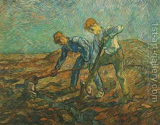

Bava Kamma 28 - Can a Man Take Law into his own Hands?
Two partners were drawing water out of a cistern on alternative days, and one came to draw on the day that was not his. The other one stopped him with a stick.
Rav Yehudah says that a person may not enforce the law for himself, but Rav Nachman says that he may. They argue about a case where there will be no loss if he does not take action.
Rav Yehudah explains: "Since there will be no loss, let him go before the judge." Rav Nachman says: "Since he is acting in accordance with the law, he does not have to trouble himself and go before the judge."